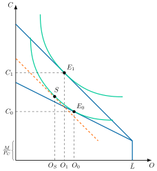
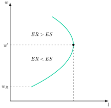
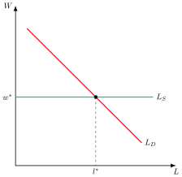
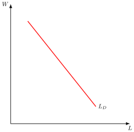
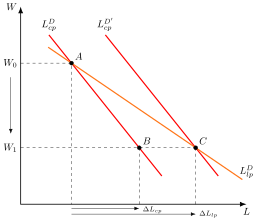
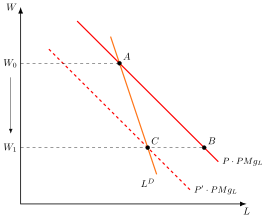
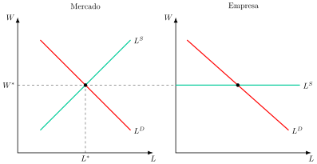
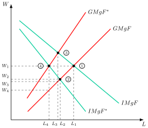
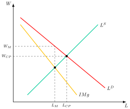
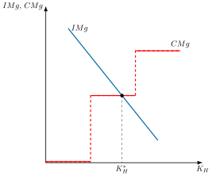

Apuntes para la oposición al Cuerpo de Diplomados Comerciales del Estado
11 Teorías microeconómicas del mercado de trabajo (I). La teoría neoclásica del mercado de trabajo. Análisis intertemporal de la oferta de trabajo. Teoría del capital humano.
11.1 Introducción  1'
1'
El mercado de trabajo es componente fundamental de la economía, pues influye directamente en el bienestar de las familias y en la productividad de un país. Aunque en teoría debería ajustarse de manera fluida, la realidad nos muestra que el desempleo persiste y las brechas salariales son comunes.
¿Por qué el mercado laboral no siempre logra el equilibrio? ¿Qué factores impiden que los salarios se adapten para que todos los que deseen trabajar encuentren un empleo?
De esta forma, las diferencias en las tasas de desempleo entre países y las variaciones salariales entre individuos con habilidades similares nos obligan a ir más allá de las explicaciones más simples, haciendo necesario el análisis del comportamiento de los agentes que participan en él mediante la Microeconomía. Esto nos llevará a entender cómo las imperfecciones y o los procesos de negociación moldean este mercado.
Por ello, el objetivo de la exposición será el análisis de las teorías microeconómicas del mercado de trabajo a través del siguiente esquema:
Teoría neoclásica, donde el mercado de trabajo funciona de manera similar a otros mercados.
Extensiones neoclásicas, donde se relajarán algunos supuestos.
Extensiones neokeynesianas, centrada en las rigideces salariales.
11.2 La teoría neoclásica del mercado de trabajo 8'
La teoría neoclásica analiza el mercado de trabajo de forma análoga al mercado de cualquier otro bien, por lo que el nivel de empleo, que es la cantidad, y el salario, que es el precio, quedan determinados por la interacción entre oferta y demanda. Esta visión, que Hicks (1932) sistematizó a partir de la teoría de la productividad marginal, sigue siendo el punto de referencia frente al que se miden las imperfecciones del mercado de trabajo.
Supuestos
La teoría neoclásica parte de los siguientes supuestos:
Competencia perfecta en el mercado de bienes y de factores productivos.
Plena flexibilidad de precios y salarios.
Perfecta movilidad del trabajo.
Homogeneidad del factor trabajo.
Información perfecta.
Ausencia de externalidades.
Racionalidad de las empresas y los individuos, es decir, buscan maximizar su bienestar.
De estos supuestos se deriva, como se verá, la existencia de un equilibrio único, estable y eficiente, en el que los salarios reales se igualan a la productividad marginal del trabajo y el mercado se vacía de manera instantánea, por lo que no hay desempleo involuntario, siendo la flexibilidad del salario el mecanismo autocorrector que asegura el ajuste automático. Para llegar a él se estudian primero la oferta de trabajo, que nace de las decisiones de los individuos, y después la demanda, que nace de las de las empresas.
Oferta de trabajo
La oferta de trabajo es el número de horas que un individuo está dispuesto a trabajar a cada salario. Se deriva de la maximización de su utilidad, en la que elige entre consumo y ocio sujeto a una restricción presupuestaria y a otra temporal.1
El problema al que se enfrenta el trabajador es la maximización de la utilidad2 que le reportan el consumo, \(C\), y el ocio, \(O\):
\[\max_{C,O}\;U\left(C,O\right)\] sujeto a dos restricciones. La presupuestaria exige que el gasto en consumo, valorado al precio del bien, \(P_{C}\), no supere la suma de la renta no salarial, \(M\), y de la renta salarial, que es el salario nominal, \(W\), multiplicado por las horas trabajadas, \(L\). La temporal reparte la dotación de tiempo total, \(\bar{L}\), entre ocio y trabajo: \[\begin{align*} P_{C}\cdot C & \leq M+W\left(\bar{L}-O\right)\\ O+L & =\bar{L} \end{align*}\] Como cada hora de ocio supone renunciar al salario que se habría ganado con ella, el salario real, \(w=W/P_{C}\), es el coste de oportunidad del ocio, es decir, su precio.
Las CPO del problema establecen que el trabajador ofrecerá trabajo hasta que la relación marginal de sustitución entre ocio y consumo, \(RMS_{O,C}\), es decir, el consumo al que está dispuesto a renunciar por una hora más de ocio, se iguale al salario real, \(w\): \[RMS_{O,C}=\dfrac{UMg_{O}}{UMg_{C}}=\dfrac{W}{P_{C}}=w\] Así, el equilibrio se produce allí donde la tasa a la que el individuo intercambia internamente ocio por consumo se iguala a la tasa objetiva a la que lo hace el mercado.
Gráficamente, en un plano de ocio, \(O\), en el eje horizontal y consumo, \(C\), en el vertical, como el de la Figura 11.1, se representan la restricción, que es a la vez presupuestaria y temporal, y las curvas de indiferencia, que recogen las combinaciones de ocio y consumo que generan el mismo nivel de utilidad. El equilibrio se alcanza en el punto de tangencia entre la restricción y la curva de indiferencia más alejada del origen, \(E_{0}\).3

Para obtener la oferta de trabajo individual, \(L^{S}\), se realiza un ejercicio de estática comparativa con el salario real, \(w\). Al subir este, la restricción pivota sobre el punto de dotación, en el que no se trabaja, y el nuevo equilibrio, \(E_{1}\), se sitúa sobre una curva de indiferencia que representa una mayor utilidad. Sin embargo, para determinar el efecto sobre el ocio hay que distinguir entre el efecto sustitución y el efecto renta.
Para ver esto gráficamente, se utilizará la variación compensatoria en el sentido de Hicks, es decir, desplazando la nueva restricción presupuestaria hasta que sea tangente con la curva de indiferencia inicial en el punto \(S\). Por lo tanto:
Efecto sustitución, de \(E_{0}\) a \(S\), que siempre reduce el ocio: al aumentar el salario aumenta el coste de oportunidad del ocio, por lo que disminuyen las horas de ocio, \(\downarrow O\), y aumenta la oferta de trabajo, \(\uparrow L^{S}\).
Efecto renta4, de \(S\) a \(E_{1}\): al aumentar el salario aumenta la renta salarial, \(W\left(\bar{L}-O\right)\), y con ella el consumo de todos los bienes normales, entre ellos el ocio, \(\uparrow O\), lo que reduce la oferta de trabajo, \(\downarrow L^{S}\).
Por lo tanto, si el ocio es un bien normal, el efecto renta y el efecto sustitución tienen signos contrarios y la pendiente de la oferta de trabajo depende de la cuantía relativa de ambos.5
Sin embargo, como la teoría no determina cuál de los dos efectos predomina, la oferta de trabajo puede ser creciente o decreciente, por lo que es necesario recurrir a los trabajos empíricos.6
Ya Robbins (1930) mostró que el efecto de una subida salarial sobre las horas trabajadas es teóricamente ambiguo, porque depende de la elasticidad de la demanda de renta en términos de esfuerzo: si es inferior a la unidad, el individuo responde a un salario más alto trabajando menos, y la curva de oferta se vuelve hacia atrás. En el plano empírico, Ragnar Frisch (1932) dedujo, a partir de sus estimaciones de la utilidad marginal de la renta, una oferta de trabajo en forma de “S” invertida, como la de la Figura 11.2, en un plano de salarios y cantidad de trabajo.7 En un primer tramo la oferta de trabajo es decreciente, en un segundo tramo creciente y, según conjeturaba el propio Frisch, en un tercer tramo podría volver a ser decreciente.

Por norma general, y para el resto del análisis, se supondrá que el individuo participa en el mercado de trabajo y que su oferta tiene pendiente creciente, lo que exige que:
El salario de equilibrio sea mayor que el salario de reserva, que es el salario más bajo por el que un trabajador está dispuesto a aceptar un trabajo.8
El ocio y el consumo sean bienes normales, para que los efectos sustitución y renta se muevan en los sentidos habituales.
El efecto sustitución sea mayor que el efecto renta en valor absoluto: \(\left|ES\right|>\left|ER\right|\).
En general, se acepta que el tramo relevante de la oferta de trabajo individual es el creciente. La oferta de trabajo de mercado se obtiene por agregación horizontal de los tramos crecientes de las ofertas individuales y responde al salario por dos vías: el margen intensivo, es decir, las horas de quienes ya trabajan, y el margen extensivo, es decir, la entrada en el mercado de quienes, al subir el salario, ven superado su salario de reserva.9
La incorporación de la mujer al mercado de trabajo ilustra la importancia del margen extensivo. Goldin (2006) la describe como una “revolución silenciosa”: desde finales de los años setenta, las mujeres pasaron de ser trabajadoras secundarias, que entraban y salían del mercado según las necesidades del hogar, a planificar carreras profesionales propias, con más formación y mayor apego al empleo. Su efecto sobre el producto a largo plazo es, sin embargo, ambiguo: Evans (2026) sostiene que la incorporación de la mujer al trabajo productivo eleva el PIB, pero que, si los hombres no aceptan relaciones más igualitarias, la caída de la fecundidad puede frenar el crecimiento.
Respecto a la empresa, en un mercado de factores perfectamente competitivo puede contratar tantos trabajadores como desee al salario de mercado, de modo que la oferta de trabajo a la que se enfrenta es perfectamente elástica a ese salario, como se observa en la Figura 11.3.

Demanda de trabajo
La demanda de trabajo es una demanda derivada, es decir, la empresa demanda trabajo porque hay demanda del bien que este ayuda a producir, y varía con ella. Por ello, se obtiene del proceso optimizador de la empresa, que maximiza sus beneficios sujeta a una restricción tecnológica, como se vio en los Temas 5 y 6.10
Corto plazo
A corto plazo, la dotación de algún factor de producción es fija. Se supondrá que el factor fijo es el capital, \(\bar{K}\), por lo que el productor maximiza solo respecto al trabajo. Además, al haber competencia perfecta en todos los mercados, la empresa es precio-aceptante: el precio del bien, \(P\), y el salario nominal, \(W\), son exógenos.
El programa de optimización será el siguiente: \[\max\quad\pi=P\cdot F\left(\bar{K},L\right)-R\left(\bar{K}\right)\cdot\bar{K}-W\cdot L \tag{11.1}\] donde \(K\) y \(L\) son los factores productivos utilizados (imperfectamente sustitutivos), y \(R\) y \(W\), sus precios nominales.
De acuerdo con la CPO, la empresa demandará trabajo hasta que su productividad marginal se iguale al salario real o, lo que es lo mismo, hasta que el valor de la productividad marginal, \(P\cdot PMg_{L}\), es decir, el ingreso que genera un trabajador adicional, se iguale al salario nominal: \[P\cdot PMg_{L}=W\;\Rightarrow\;PMg_{L}=w\]
Gráficamente, en un plano de salario y trabajo como el de la Figura 11.4, como la \(PMg_{L}\) es decreciente, la empresa solo contratará más trabajadores si el salario baja. La curva del valor de la productividad marginal, \(P\cdot PMg_{L}\), es, por tanto, la demanda de trabajo a corto plazo de la empresa, y tiene pendiente negativa.

Por su parte, la CSO se cumple porque la productividad marginal del trabajo es decreciente.11
Largo plazo
A largo plazo, la dotación de todos los factores es variable, por lo que ahora el productor maximiza respecto al trabajo y al capital.
Las CPO establecen que:12
Minimización de costes: en el largo plazo la empresa minimiza costes para cada nivel de producción, es decir, elige su tamaño de planta óptimo, intercambiando factores hasta que su relación marginal de sustitución técnica, \(RMST\), se iguala a la tasa a la que puede hacerlo en el mercado, que es la pendiente de la isocoste, \(W/R\): \[RMST=\dfrac{PMg_{L}}{PMg_{K}}=\dfrac{W}{R}\]
Maximización de beneficios: señala que la empresa contratará factores productivos hasta que sus productividades marginales sean iguales a sus costes reales (o, de igual manera, hasta que los valores de sus productividades marginales sean iguales a sus costes nominales)13 \[\begin{aligned} PMg_{L}=w\\ PMg_{K}=r \end{aligned} \tag{11.2}\]
La CSO se cumple si la función de producción es estrictamente cóncava, lo que implica rendimientos a escala decrecientes.
Ahora se observa cómo, en el largo plazo, la demanda de un factor depende no solo de su productividad y de su coste, sino también de la productividad y del coste del otro factor. Por eso la demanda individual a largo plazo ya no coincide con la curva del valor de la productividad marginal.
Esto se puede observar con una caída del salario, \(\downarrow W\), tal y como se observa en la Figura 11.5:
Como se ha visto, la curva del valor de la productividad marginal (\(P\cdot PMg_{L}\)) describe la demanda de trabajo cuando el nivel de capital es fijo.
Si el salario disminuye, se va a demandar más trabajo para que se cumpla \(\downarrow W=P\cdot\downarrow PMgL\).
El aumento del trabajo va a aumentar la \(PMg_{K}\), por lo que, ahora que el capital es variable, se va a demandar también más capital para que disminuya la \(PMg_{K}\) y se pueda cumplir \(R=P\cdot\uparrow\downarrow PMgK.\)
Al demandarse más capital, la \(PMg_{L}\) aumenta y, por tanto, la curva de demanda de trabajo se desplaza.

Del proceso anterior se extraen tres conclusiones:
Una disminución del salario aumenta la demanda de trabajo y de capital, \(\downarrow W\Rightarrow\uparrow L,\uparrow K\).14
La demanda individual en el largo plazo ya no coincide con la curva de \(P\cdot PMg_{L}\).
La demanda individual a largo plazo es más elástica que la de corto plazo, precisamente por la mayor flexibilidad de la empresa para combinar los factores, lo que se conoce como principio de Le Chatelier-Samuelson.
La elasticidad de la demanda de trabajo depende, según las reglas de Marshall que formalizó Hicks (1932), de cuatro factores. Es mayor cuanto más fácil es sustituir trabajo por otros factores, cuanto más elástica es la demanda del bien que se produce, cuanto mayor es el peso del trabajo en los costes totales, siempre que la demanda del bien sea más elástica que la sustitución entre factores, y cuanto más elástica es la oferta de los demás factores (Borjas 2016, cap. 3). De estas reglas depende, por ejemplo, cuánto empleo se pierde cuando se encarece el trabajo con una subida de las cotizaciones sociales.
Demanda agregada
El análisis de la demanda agregada se realiza en el corto plazo por simplicidad, ya que en el largo plazo la demanda de trabajo depende de más factores que su productividad marginal y su coste.
Importante
La demanda de trabajo agregada no es la suma horizontal de las demandas individuales. Cuando cambia el salario, varía la demanda de trabajo de las empresas y, con ella, la producción agregada y el precio del producto. Cada empresa, al contratar y producir más, hace bajar el precio del bien para todas las demás sin tenerlo en cuenta. Este efecto, que se transmite a través de los precios, se denomina externalidad pecuniaria:
Así, ante una disminución del salario, las empresas contratarán más trabajadores y producirán más, lo que desplazará a la derecha la curva de oferta de mercado del bien y reducirá su precio.
A causa de dicha reducción, el valor de la productividad marginal (\(P\cdot PMgL\), o demanda de trabajo) se desplaza a la izquierda, por lo que tras una reducción del salario se pasa de \(A\) a \(C\) en lugar de \(A\) a \(B\).
Por tanto, para obtener la demanda de trabajo de una industria deben agregarse las cantidades que demandaría cada empresa teniendo en cuenta el cambio del precio del bien al variar el salario, es decir, las cuasi-demandas.
Esto hace que la demanda agregada de trabajo sea más inelástica que la que se obtendría si no variase el precio del bien. La intuición es que, al reducirse el salario, también cae el precio del bien, por lo que las empresas tienen menos incentivos a contratar más trabajadores.

Equilibrio
Halladas las curvas de oferta y demanda agregadas de trabajo, el equilibrio neoclásico, es decir, el salario y el nivel de empleo, se produce en la intersección de ambas curvas, como se observa en la Figura 11.7.

Se da, pues, un equilibrio único, estable y eficiente, en el que los salarios reales se igualan a la productividad marginal del trabajo y el mercado se vacía de manera instantánea. No hay desempleo involuntario, aunque sí puede haber desempleo voluntario o friccional, y la flexibilidad del salario es el mecanismo autocorrector que asegura el ajuste automático. La implicación de política es clara: el mercado no necesita intervención, y cualquier rigidez que impida bajar el salario, como un salario mínimo por encima del de equilibrio, solo puede generar paro.
Sin embargo, estas conclusiones no se ajustan a la evidencia empírica, en la que no hay ni pleno empleo ni ajuste automático. Por ello, a continuación se relaja el supuesto de competencia perfecta, y los dos bloques siguientes levantarán el de un horizonte de un solo período y el de trabajo homogéneo.
Competencia imperfecta en los mercados de bienes y de trabajo
Cuando existe competencia imperfecta, los resultados difieren de los obtenidos en un entorno competitivo. Se estudia primero qué ocurre cuando el poder de mercado lo tiene la empresa, como monopolista en el mercado del bien o como monopsonista en el de trabajo, y después cuando lo tienen los trabajadores organizados en un sindicato.
Poder de mercado de la empresa: monopolio y monopsonio
Un monopsonio es un mercado con un único comprador. En el de trabajo, la empresa monopsonista es la única demandante de trabajo y se enfrenta, por ello, a toda la curva de oferta del mercado, que es creciente, en lugar de tomar el salario como dado, como ya se vio en el Tema 8.15 Puede ocurrir porque la empresa sea la única de la zona, porque esté muy especializada o porque todas las empresas se hayan agrupado en una patronal que lidera las negociaciones con los trabajadores.
Además, hay que distinguir si la empresa tiene también poder de monopolio en el mercado de bienes, porque la demanda de trabajo es una demanda derivada que depende de su oferta de producto. De ahí que los resultados del monopsonista varíen según sea o no monopolista en el mercado del bien.
Se analiza la demanda de trabajo a corto plazo, con la función de producción \(F\left(\bar{K},L\right)\), de manera genérica, para particularizarla después según la empresa sea precio-aceptante o tenga poder de mercado en uno o en ambos mercados.
Las CPO establecen que el ingreso marginal del factor, \(IMgF\), que en el Tema 8 se denomina ingreso del producto marginal, \(IMg\cdot PMg_{L}\), se iguala al gasto marginal del factor, \(GMgF\). En la condición intervienen la elasticidad-precio de la demanda del bien, \(\varepsilon_{Q^{D},P}\), y la elasticidad de la oferta de trabajo respecto al salario, \(\varepsilon_{L^{S},W}\): \[P\cdot PMg_{L}\left(1-\dfrac{1}{\left|\varepsilon_{Q^{D},P}\right|}\right)=W\left(1+\dfrac{1}{\left|\varepsilon_{L^{S},W}\right|}\right)\]
Gráficamente, en un plano de salarios y trabajo como el de la Figura 11.8, se pueden analizar los principales casos:

Con competencia perfecta en el mercado de bienes, la empresa se enfrenta a una demanda totalmente elástica (\(\varepsilon_{Q^{D},P}=\infty\)), mientras que con competencia perfecta en el mercado de trabajo, la empresa se enfrenta a una oferta totalmente elástica (\(\varepsilon_{L^{S},W}=\infty\)). El equilibrio estará en el punto 1.
Ingreso marginal del factor: variación en el ingreso al contratar una unidad adicional de factor. Con poder de monopolio en el mercado del bien, la curva de \(IMgF\), que es la demanda de trabajo de la empresa, queda por debajo de la de competencia perfecta porque \[IMgF^{*}=P\cdot PMg_{L}\left(1-\dfrac{1}{\left|\varepsilon_{Q^{D},P}\right|}\right)<P\cdot PMg_{L}\] por lo que, si la empresa es monopolista en bienes y precio-aceptante en trabajo, el equilibrio estará en el punto 2. La intuición es que, al tener la empresa poder de monopolio en el mercado del bien, un aumento de su oferta reduce el precio de todas las unidades, por lo que el valor que le genera un trabajador adicional es menor que si hubiese competencia perfecta en el mercado del bien, \(P\cdot PMg_{L}\), y su demanda de trabajo es menor. Además, se da la conocida como explotación de monopolio: en el punto 2 el trabajador cobra su ingreso marginal, \(IMgF^{*}\), que es inferior al valor de su productividad marginal, \(P\cdot PMg_{L}\), y tanto el salario como el empleo son menores que en el equilibrio de competencia.16
Gasto marginal del factor: variación en el coste de contratar una unidad adicional de factor. Con poder de monopsonio, la curva de \(GMgF\) queda por encima de la curva de oferta de trabajo, que es la de gasto medio, porque \[GMgF^{*}=W\left(1+\dfrac{1}{\left|\varepsilon_{L^{S},W}\right|}\right)>W\] y ambas solo coinciden en competencia perfecta, cuando la oferta es horizontal. Por ello, si la empresa es precio-aceptante en bienes y monopsonista en trabajo, el equilibrio estará en el punto 3. La intuición es que, para contratar a un trabajador más, el monopsonista tiene que subir el salario a todos los que ya emplea, por lo que cada trabajador adicional le cuesta más que el salario que cobra. El salario, sin embargo, se lee siempre sobre la curva de oferta, que indica lo mínimo que hay que pagar para atraer a ese número de trabajadores. Así, cuando existe monopolio en el mercado de bienes, la explotación de monopolio viene dada por la diferencia entre el \(IMgF\) de competencia, \(P\cdot PMg_{L}\), y el \(IMgF^{*}\). Si existe también monopsonio, la explotación de monopsonio añade la diferencia entre el \(IMgF^{*}\), igual al \(GMgF^{*}\) en el equilibrio, y el salario que se paga, que se lee sobre la curva de oferta, en el punto 4.
| Mercado de producto | Equilibrio | Mercado factor \(L\) | |
|---|---|---|---|
| 1 | Precio-aceptante | \(P\cdot PMg_{L}=W\) | Precio-aceptante |
| 2 | Monopolista en \(x\) | \(IMg\cdot PMg_{L}=W\) | Precio-aceptante |
| 3 | Precio-aceptante | \(P\cdot PMg_{L}=W\left(1+\dfrac{1}{\left|\varepsilon_{L^{S},W}\right|}\right)\) | Monopsonista en \(L\) |
| 4 | Monopolista en \(x\) | \(IMg\cdot PMg_{L}=W\left(1+\dfrac{1}{\left|\varepsilon_{L^{S},W}\right|}\right)\) | Monopsonista en \(L\) |
En suma, con competencia perfecta en ambos mercados, el salario y el nivel de empleo son los más altos, en el punto 1, mientras que con la empresa ostentando poder de mercado en ambos mercados, en el punto 4, el salario y el nivel de empleo son los más bajos. No hay, sin embargo, paro involuntario, porque el salario se fija sobre la curva de oferta y todos los que desean trabajar a ese salario encuentran empleo. El empleo es bajo porque muchos prefieren no trabajar por un salario tan reducido. Cuando la empresa es solo monopolista o solo monopsonista, los resultados se encuentran entre ambos extremos, sin que pueda decirse con carácter general cuál de los dos casos da lugar a más empleo.
La principal implicación de política del monopsonio se refiere al salario mínimo, que, fijado entre el salario de monopsonio y el competitivo, puede elevar a la vez el salario y el empleo.17 El ejemplo más conocido es el de Card y Krueger (1994), que compararon los restaurantes de comida rápida de Nueva Jersey, que subió su salario mínimo en 1992, con los de la vecina Pensilvania, que no lo hizo, y no hallaron una caída del empleo, resultado difícil de explicar en competencia perfecta pero compatible con el monopsonio (Manning 2003).
Poder de monopolio de los trabajadores: el sindicato
Cuando son los trabajadores quienes tienen poder en la oferta de trabajo, el resultado es el simétrico del monopsonio. El trabajador es el único oferente de trabajo porque está muy especializado o, sobre todo, porque los trabajadores se agrupan en un sindicato que negocia con las empresas, algo que se viene observando en las economías desarrolladas desde el siglo XIX.
La función de utilidad del sindicato depende positivamente del salario y del nivel de empleo, es decir, de la masa salarial, \(W\cdot L\), y negativamente de la desutilidad asociada al trabajo, \(C\left(L\right)\): \[U=W\left(L\right)\cdot L-C\left(L\right)\] De su CPO se obtiene que el sindicato iguala su ingreso marginal, \(IMg\), al coste marginal del trabajo, \(CMg_{L}\), en una condición en la que interviene la elasticidad de la demanda de trabajo respecto al salario, \(\varepsilon_{L^{D},W}\): \[IMg=W\left(1-\dfrac{1}{\left|\varepsilon_{L^{D},W}\right|}\right)=CMg_{L}\]
Gráficamente, como se observa en la Figura 11.9, la curva de ingreso marginal está por debajo de la curva de demanda de trabajo porque, al tener el sindicato poder de monopolio, un aumento de su oferta reduce el salario de todas las unidades, \(IMg<W\).

En suma, con un sindicato con poder de monopolio en el mercado de trabajo, el nivel de empleo es inferior y el salario mayor que en competencia perfecta, por lo que se produce paro involuntario: a ese salario hay trabajadores que desearían trabajar y no encuentran empleo. El resultado depende, además, del objetivo del sindicato. Si maximiza el empleo, el equilibrio es el competitivo. Si maximiza la masa salarial, fija el salario en el que su ingreso marginal es nulo. Y si maximiza la renta neta de sus afiliados, como en el planteamiento anterior, iguala ingreso y coste marginales y obtiene el salario más alto y el empleo más bajo de los tres casos.
Por lo tanto, tanto en el caso del monopsonio de la empresa como en el del sindicato, cuanto mayor es el poder de mercado de los agentes, menor es el nivel de empleo de equilibrio. Pero solo en el segundo caso hay paro involuntario, porque el salario supera al competitivo y la oferta de trabajo excede a la demanda.
Cuando un sindicato con poder de monopolio se enfrenta a una empresa monopsonista se tiene un monopolio bilateral, ya presentado en el Tema 8. El resultado queda indeterminado: el salario se sitúa entre el que fijaría el monopsonista y el que pediría el sindicato, según el poder de negociación de cada parte, cuyos modelos se estudian en el Tema 12. Es el único caso en el que el análisis neoclásico justifica el sindicato, como poder compensador del monopsonio, porque puede acercar el salario y el empleo a los competitivos.
Todo el análisis anterior es estático: el individuo decide cuántas horas trabaja en un único período, y el trabajo se supone homogéneo. Los dos bloques siguientes levantan sucesivamente estos dos supuestos.
11.3 Análisis intertemporal de la oferta de trabajo 5'
El modelo estático trata cada período como si fuera independiente de los demás, pero las decisiones de trabajo se toman a lo largo de toda la vida. El análisis intertemporal considera que el individuo reparte su consumo y su ocio entre períodos, lo que permite explicar cómo varía la oferta de trabajo a lo largo del ciclo vital y cómo responde a los cambios transitorios del salario, que en los modelos del ciclo real constituyen el mecanismo de propagación de los shocks.
La oferta de trabajo a lo largo del ciclo vital
El salario sigue con la edad un perfil creciente y cóncavo: es bajo al comienzo de la vida laboral, aumenta con la experiencia hasta alcanzar un máximo hacia los cincuenta años y después se estanca o cae ligeramente. Las horas trabajadas siguen un perfil parecido (Borjas 2016, cap. 2).
La teoría del ciclo vital explica esta coincidencia. Como el individuo conoce de antemano la senda de su salario, esos cambios previstos no alteran su riqueza a lo largo de la vida, que ya los incorporaba, y solo cambian el precio del ocio en cada momento. Por eso concentrará sus horas de trabajo en los años en que el salario es más alto, que es cuando el ocio es más caro, y suavizará su consumo ahorrando o endeudándose. A diferencia del modelo estático, estos cambios del salario solo generan efecto sustitución.
La sustitución intertemporal: Lucas y Rapping (1969)
Lucas y Rapping (1969) fueron los primeros en tratar la oferta de trabajo como una decisión intertemporal, para explicar por qué el empleo fluctúa mucho a lo largo del ciclo mientras el salario real lo hace poco.18 El modelo se basa en los siguientes supuestos:
El individuo vive dos períodos.
No dispone de riqueza inicial, es decir, todas sus rentas son salariales.
Los mercados de capitales son perfectos, es decir, puede transferir fondos de un período a otro al tipo de interés real, \(r\).
La función de utilidad es aditivamente separable en el tiempo y también entre consumo y ocio.
La dotación de tiempo de cada período se normaliza a la unidad, \(O_{t}+L_{t}=\bar{L}=1\).
Con el consumo de cada período, \(C_{t}\), las horas trabajadas, \(L_{t}\), el salario real, \(w_{t}\), y la tasa subjetiva de descuento, \(\rho\), que define el factor de descuento, \(\beta\), el individuo resuelve \[\max_{C_{1},C_{2},L_{1},L_{2}}\;U=u\left(C_{1}\right)+v\left(1-L_{1}\right)+\beta\left[u\left(C_{2}\right)+v\left(1-L_{2}\right)\right],\qquad\beta=\dfrac{1}{1+\rho}\] sujeto a la restricción presupuestaria intertemporal, según la cual el valor actual del consumo debe igualar al de las rentas salariales: \[C_{1}+\dfrac{C_{2}}{1+r}=w_{1}L_{1}+\dfrac{w_{2}L_{2}}{1+r}\]
De las CPO se obtienen tres condiciones, cuya derivación se desarrolla en el Apéndice:
Intratemporal: en cada período, la relación marginal de sustitución entre ocio y consumo se iguala al salario real, \(RMS_{O_{t},C_{t}}=v^{\prime}\left(1-L_{t}\right)/u^{\prime}\left(C_{t}\right)=w_{t}\), como en el modelo estático.
Ecuación de Euler: el consumo se reparte entre períodos hasta que \(u^{\prime}\left(C_{1}\right)=\beta\left(1+r\right)u^{\prime}\left(C_{2}\right)\).
Intertemporal del ocio, que es la novedad del modelo: \[\dfrac{v^{\prime}\left(1-L_{1}\right)}{v^{\prime}\left(1-L_{2}\right)}=\dfrac{1+r}{1+\rho}\cdot\dfrac{w_{1}}{w_{2}} \tag{11.3}\] es decir, el individuo trabajará relativamente más en el período en que el salario, corregido por el tipo de interés y la impaciencia, sea más alto.
Por tanto, la oferta de trabajo relativa depende positivamente del salario relativo y del tipo de interés, y negativamente de la tasa de descuento, que mide la impaciencia del individuo: \[\dfrac{L^{S}_{1}}{L^{S}_{2}}=f\left(\underset{(+)}{\dfrac{w_{1}}{w_{2}}},\;\underset{(+)}{r},\;\underset{(-)}{\rho}\right)\] De ahí se derivan cuatro implicaciones:
Una subida permanente del salario, que eleva en la misma proporción el de los dos períodos, no altera la oferta relativa: solo tiene un efecto renta, que cambia el nivel de la senda de consumo y de ocio.
Una subida transitoria del salario en el primer período aumenta la oferta de trabajo en ese período respecto al segundo. Es la sustitución intertemporal del trabajo: se trabaja más cuando trabajar compensa más.
Una subida del tipo de interés aumenta la oferta de trabajo presente, porque trabajar y ahorrar hoy resulta más atractivo.
Una mayor impaciencia la reduce, porque el individuo prefiere disfrutar del ocio cuanto antes.
La implicación de política es que los cambios transitorios tienen efectos mucho mayores sobre el empleo que los permanentes. Una rebaja temporal de los impuestos sobre el trabajo, por ejemplo, desplaza horas hacia el período en que se aplica, mientras que una permanente apenas altera la oferta relativa.
La elasticidad de Frisch y MaCurdy (1981)
El parámetro clave del modelo es la elasticidad de Frisch, que mide la respuesta de las horas trabajadas a un cambio del salario manteniendo constante la utilidad marginal de la riqueza, \(\lambda\): \[\varepsilon^{F}=\left.\dfrac{\partial\ln L_{t}}{\partial\ln w_{t}}\right|_{\lambda\ \text{constante}}\] Recoge, por tanto, un efecto sustitución intertemporal puro, el que se produce cuando el salario cambia de forma prevista a lo largo del ciclo vital o de forma transitoria, sin alterar la riqueza de toda la vida.19 Por ejemplo, si la utilidad de cada período es \(\ln C_{t}-\varphi\,L^{1+1/\eta}_{t}/\left(1+1/\eta\right)\), donde \(\varphi\) mide el peso de la desutilidad del trabajo y \(\eta\) su curvatura, la elasticidad de Frisch es constante e igual a \(\eta\).
MaCurdy (1981) fue el primero en estimarla de forma coherente con el modelo. Utilizó datos de panel de 513 hombres casados de Estados Unidos entre 1967 y 1976 y aprovechó que el crecimiento previsto del salario a lo largo del ciclo vital no altera la riqueza: al comparar a cada individuo consigo mismo a lo largo del tiempo, el efecto de la riqueza desaparece y queda solo el de sustitución. Concluyó que una subida del 10 % del salario real debida a su crecimiento a lo largo del ciclo vital eleva las horas trabajadas entre un 1 % y un 3 %, es decir, una elasticidad de Frisch de entre 0,1 y 0,3.
Evidencia empírica y papel en el ciclo real
Buena parte de la evidencia posterior, que estima esta elasticidad con efectos fijos individuales, confirma que es positiva pero pequeña, en torno a 0,1 para los varones: las horas apenas cambian en las edades centrales aunque el salario crezca (Borjas 2016, cap. 2). Hay, no obstante, respuestas claras allí donde el trabajador puede elegir sus horas con libertad, como la de los taxistas, que alargan sus turnos en los días y franjas en que esperan más clientes, como recoge el propio Borjas. Chetty et al. (2011), al revisar la evidencia cuasiexperimental, proponen valores de 0,5 en el margen intensivo y de 0,25 en el extensivo, lo que da una elasticidad de Frisch de las horas agregadas de alrededor de 0,75.
Esta magnitud es decisiva para la teoría del ciclo real. Kydland y Prescott (1982) extendieron el razonamiento de Lucas y Rapping a una economía con incertidumbre sometida a shocks reales de productividad. Ante un shock transitorio que eleva el salario real, los trabajadores sustituyen ocio presente por ocio futuro y trabajan más hoy, lo que genera la expansión y la posterior contracción. Un shock permanente, en cambio, no altera la oferta relativa de trabajo ni genera ciclo, y solo modifica la decisión de inversión por el aumento permanente de la productividad marginal del capital. La implicación de política es que, si las fluctuaciones del empleo son respuestas óptimas a shocks reales, las políticas de estabilización de la demanda no mejoran el bienestar.
Sin embargo, para reproducir las grandes fluctuaciones del empleo con salarios reales poco variables, estos modelos necesitan una elasticidad intertemporal elevada, mayor que la que estiman la mayoría de los trabajos microeconómicos, lo que ha generado un intenso debate (Borjas 2016, cap. 2). Si la sustitución intertemporal es pequeña, buena parte de las fluctuaciones del empleo no pueden ser voluntarias, y hay que acudir a las rigideces y fricciones que se estudian en el Tema 12 y, desde el punto de vista macroeconómico, en los Temas 11 y 12 de la Parte B.
Tanto el enfoque estático como el intertemporal han supuesto hasta aquí que todos los trabajadores son iguales. La teoría del capital humano levanta este supuesto con un razonamiento también intertemporal: formarse hoy tiene un coste presente a cambio de un salario más alto en el futuro.
11.4 Teoría del capital humano 5'30"
Hasta ahora se ha mantenido el supuesto de que el trabajo es homogéneo, lo que implica un salario de equilibrio único. Sin embargo, los trabajadores difieren en su cualificación, que se adquiere en gran medida mediante la educación y la formación.
La educación como inversión: Schultz (1961) y Becker (1964)
Schultz (1961), en su discurso como presidente de la Asociación Económica Americana, observó que la producción de Estados Unidos había crecido mucho más que la tierra, las horas de trabajo y el capital físico empleados, y atribuyó buena parte de la diferencia a la inversión de las personas en sí mismas, en educación, en salud o en migraciones. Gary Becker, Premio Nobel en 1992 “por haber extendido los dominios del análisis microeconómico a un rango más amplio del comportamiento y la interacción humana, incluyendo comportamientos fuera de mercado”, desarrolló esta idea en la teoría del capital humano (1964), que considera la educación como una inversión que incrementa la productividad del trabajador y, con ella, su salario.
De esta forma, el capital humano es el conjunto de conocimientos y habilidades de un trabajador que elevan su productividad y que, en el modelo de Becker, se adquieren mediante la educación y la formación. El trabajador no puede venderlo, pero sí alquilar sus servicios a las empresas.20
Por tanto, la educación deja de ser un fenómeno cultural o social y pasa a ser un fenómeno económico, una decisión de inversión más. Cada individuo compara los costes de formarse, directos, como la matrícula o los materiales, e indirectos, como el salario al que renuncia mientras estudia, con el aumento de sus salarios futuros, y sigue estudiando mientras el valor actual neto de la inversión sea positivo. Este enfoque generó fuertes críticas en los años cincuenta y sesenta, porque se consideraba que denigraba a los trabajadores tratándolos como meras máquinas, pero su capacidad para explicar y predecir los fenómenos educativos acabó otorgándole la validez que tiene hoy.
Formación general y formación específica
Becker distinguió entre dos tipos de formación, según dónde pueda aprovecharse:
Formación general: incrementa la productividad del individuo en cualquier empresa.
Formación específica: incrementa la productividad del individuo solo en una determinada empresa.21
La distinción determina quién paga la formación. La general corresponde al trabajador, pues ninguna empresa tiene incentivos a costear una formación que el trabajador podría aprovechar en otras: si lo hiciera, la competencia de estas le obligaría a subirle el salario hasta su nueva productividad y no recuperaría lo invertido. Por eso el trabajador la paga aceptando un salario más bajo mientras se forma (Borjas 2016, 265). La formación específica, en cambio, se reparte entre la empresa y el trabajador, porque ninguno querría asumirla entera: si la pagara solo la empresa, el trabajador podría marcharse, y si la pagara solo el trabajador, la empresa podría despedirlo, y en ambos casos se perdería la inversión (Borjas 2016, 266-67).22 Por eso los trabajadores con formación específica rotan menos y son los últimos en ser despedidos en las recesiones.
Respecto a la formación general, en un plano con el capital humano, \(K_{H}\), en el eje horizontal y su ingreso y coste marginales, \(IMg\) y \(CMg\), en el vertical, como el de la Figura 11.10, el trabajador invierte en capital humano hasta que el aumento del salario que le reporta la última unidad, \(\partial W\left(K_{H}\right)/\partial K_{H}\), descontado al tipo de interés, \(r\), se iguala a su coste marginal: \[\dfrac{\partial W\left(K_{H}\right)/\partial K_{H}}{1+r}=CMg_{K_{H}}\]
Ingreso marginal: es decreciente porque la inversión en capital humano presenta rendimientos decrecientes, por los límites de la memoria y del tiempo disponible: aprender a leer aporta más que el décimo máster.23
Coste marginal: es creciente y discontinuo, pues, según Becker, el individuo acude a fuentes de financiación racionadas, empezando por las más baratas: becas, préstamos subvencionados y préstamos a precios de mercado.24

El elemento relevante de este problema intertemporal es que puede estudiarse sin tener en cuenta la función de utilidad, gracias al teorema de la separación en la formulación de Acemoglu y Autor (s.f., cap. 1): con mercados de capitales perfectos y un ocio que no reporta utilidad, la inversión en capital humano que maximiza la utilidad es la que maximiza el valor actual de los ingresos, con independencia de las decisiones de consumo.
En suma, las decisiones de invertir en educación, que difieren según la capacidad, los costes y el acceso a la financiación de cada individuo, dan lugar a trabajadores heterogéneos. Esto altera los resultados de la teoría neoclásica tradicional, porque segmenta el mercado: ya no existe un único salario de equilibrio, sino distintos salarios según la cualificación, aunque el único desempleo sigue siendo el voluntario.
La ecuación de Mincer (1974)
La aplicación empírica de la teoría es la función de ingresos de Mincer (1974), que ya había modelizado la decisión de invertir en educación (1958). Relaciona el logaritmo del salario, \(\ln w\), con los años de escolarización, \(S\), y con los años de experiencia laboral, \(X\), y su cuadrado, con una perturbación aleatoria, \(\varepsilon\): \[\ln w=\beta_{0}+\beta_{1}S+\beta_{2}X+\beta_{3}X^{2}+\varepsilon\] El coeficiente \(\beta_{1}\) se interpreta como la tasa de rendimiento de un año adicional de educación, de modo que cada año de estudios eleva el salario en torno a un \(100\cdot\beta_{1}\) %. Los coeficientes de la experiencia, con \(\beta_{2}>0\) y \(\beta_{3}<0\), recogen la formación en el empleo y dan un perfil de ingresos creciente y cóncavo con la edad, como el que se vio en el análisis intertemporal. La derivación de la ecuación se recoge en el Apéndice.25
La ecuación de Mincer es el primer pilar del análisis empírico de los rendimientos de la educación y la aplicación más directa de la teoría del capital humano a la distribución de los salarios.
Rendimientos de la educación y problemas de estimación
Aunque la ecuación de Mincer se ajusta bien a los datos, su estimación por mínimos cuadrados ordinarios, MCO, no permite interpretar \(\beta_{1}\) como un efecto causal. El principal problema es el sesgo de habilidad: si los individuos más capaces estudian más y, además, ganarían más con cualquier nivel de estudios, parte de lo que se atribuye a la educación se debe en realidad a una capacidad que no se observa, y el rendimiento estimado está sesgado al alza. A ello se suman la influencia del entorno familiar, porque los niveles educativos altos suelen ir unidos a una renta y una educación altas de los padres, y los errores de medida de los años de estudio, que sesgan el rendimiento a la baja.
Por ello, la literatura ha recurrido a experimentos naturales, que buscan variaciones de la educación ajenas a la capacidad:26
Angrist y Krueger (1991) usaron como variable instrumental el trimestre de nacimiento: por las leyes de escolarización obligatoria, quienes nacen al comienzo del año pueden dejar los estudios con menos años de escuela. Sus estimaciones del rendimiento de un año de estudios, de entre el 6 % y el 10 %, apenas difieren de las de MCO, lo que sugiere que el sesgo de habilidad es pequeño (Card 2001).
Card (1995) usó como instrumento la cercanía de una universidad al lugar en el que se crece, que abarata los estudios.
Ashenfelter y Krueger (1994) compararon gemelos idénticos, que comparten capacidad y entorno familiar, y estimaron un rendimiento de entre el 12 % y el 16 % por año de estudios.
Duflo (2001) aprovechó el gran programa de construcción de escuelas de Indonesia de los años setenta y obtuvo rendimientos de entre el 6,8 % y el 10,6 %.
En conjunto, las estimaciones con variables instrumentales suelen ser iguales o mayores que las de MCO, lo que Card (1999) atribuye a que los rendimientos son heterogéneos y más altos para quienes estudian más gracias a esas reformas, a menudo personas con dificultades para financiarse. Heckman et al. (2006) advierten, además, de que el coeficiente de Mincer solo coincide con la tasa interna de rendimiento de la educación bajo supuestos muy restrictivos, como la ausencia de costes directos y de impuestos. La implicación de política es que la educación es una inversión muy rentable y que los obstáculos para financiarla pueden explicar buena parte de la inversión insuficiente en ella.
La señalización como alternativa y otras críticas
La teoría del capital humano no es la única explicación de que los más educados ganen más. En el modelo de señalización de Spence (1973), que se estudia en el Tema 13, la educación no aumenta la productividad, sino que, en un contexto de información asimétrica, permite a los trabajadores más productivos distinguirse, porque para ellos estudiar es menos costoso. Las cadenas causales son distintas:
Becker: \(\uparrow\) educación (inversión) \(\Rightarrow\) \(\uparrow\) productividad \(\Rightarrow\) \(\uparrow\) salario.
Spence: \(\uparrow\) productividad \(\Rightarrow\) \(\uparrow\) educación (señal) \(\Rightarrow\) \(\uparrow\) salario.
Ambas teorías predicen la misma relación positiva entre educación y salario, pero sus implicaciones de política difieren: si la educación solo señaliza, su rendimiento social es menor que el privado y puede haber sobreeducación (Cahuc et al. 2014, cap. 4). Además, la teoría de Becker está sujeta a otras críticas:
Si el mercado es capaz de proveer el nivel óptimo de formación, ¿por qué se financia públicamente el capital humano? La respuesta es que la teoría de Becker no tiene en cuenta ni las externalidades del capital humano ni las restricciones al crédito.27
El capital humano se deprecia y, además, no es el único determinante del salario, en el que influyen también el sexo o la antigüedad.
Supone información perfecta sobre costes y rendimientos, lo que resulta poco realista.
Ignora otros beneficios no salariales de la formación, como la motivación o la disciplina.
No todo gasto en educación es inversión: muchas veces se trata más de consumo, como un máster en una universidad prestigiosa por su reputación.
11.5 Conclusiones  40"
40"
Como conclusión, el planteamiento tradicional parte de unos supuestos muy alejados de la realidad y por lo tanto el levantamiento de los mismos darán paso a nuevas líneas de investigación. El tratamiento del mercado de trabajo según los diferentes puntos de vista, tiene una importancia fundamental para las recomendaciones de política económica.
Por ejemplo, los neoclásicos abogaban por la no intervención pero los nuevos modelos abren el camino a una intervención del sector público tanto por el lado de la demanda como por el lado de la oferta, cuyo objetivo sería mejorar el funcionamiento del mercado a través de, por ejemplo, políticas activas recomendadas por la OCDE.
Además, el análisis microeconómico permite además estudiar fenómenos macroeconómicos como la histéresis y los nuevos desarrollos se vuelven fundamentales cuestiones relativas a la formación del trabajador y al aumento de la capacidad productiva de la economía.
Apéndice
11.A.1. Gary Becker
Gary Becker es particularmente conocido por su aplicación del instrumental económico a problemas que trascienden el ámbito de la economía tradicional, introduciéndose en campos como la sociología, la criminalidad, la psicología o las relaciones sociales en el hogar.
Esta metodología no parte de la asunción de un tipo de comportamiento egoísta por parte de los individuos, sino del supuesto de que los agentes actúan en función de sus valores y preferencias. En ese sentido, buscarán maximizar su bienestar “tal y como ellos lo conciben”.
A su vez tendrán un comportamiento tipo forward looking y consistente en el tiempo, lo que permitirá su modelización.
Por último, los agentes estarán sujetos a diferentes restricciones, como la renta, el tiempo disponible, los límites a la racionalidad y las oportunidades de la economía.
11.A.2. Monopolio bilateral
11.A.3. Estática comparativa en la demanda de trabajo a largo plazo
11.A.4. Diferencias salariales compensatorias
Las diferencias salariales compensatorias son un concepto central en la Microeconomía del trabajo que explica por qué trabajos con características indeseables pagan salarios más altos que trabajos similares con condiciones más favorables. Esta teoría se basa en la idea de que los trabajadores no solo valoran el salario, sino también las condiciones del trabajo, como el riesgo, el esfuerzo, los horarios o la seguridad. Se encuadra dentro de la teoría neoclásica, ya que asume que un mercado competitivo iguala los "retornos netos" de diferentes empleos, no solo los salarios.
El Mecanismo detrás del Concepto
En este modelo, las empresas deben ofrecer un “plus salarial” para atraer trabajadores a empleos con características negativas. Los trabajadores, por su parte, aceptan ese salario extra como compensación por el riesgo o la molestia. Esta dinámica crea un equilibrio donde, en el margen, un trabajador es indiferente entre un trabajo de bajo riesgo y menor salario y uno de alto riesgo con un salario mayor.
Ejemplos
Trabajos peligrosos: Un minero o un trabajador de la construcción que opera en altura ganará más que un oficinista con habilidades similares. El salario adicional compensa el mayor riesgo de accidentes o lesiones.
Turnos nocturnos o de fin de semana: Un enfermero que trabaja en el turno de noche en un hospital o un empleado de una tienda de conveniencia que trabaja en horarios no convencionales recibirá una prima salarial por trabajar cuando la mayoría de la gente descansa.
Condiciones ambientales adversas: Un soldador que trabaja en entornos con altas temperaturas o un limpiador de aguas residuales ganará un salario más alto para compensar las condiciones insalubres o desagradables.
Inestabilidad laboral: Un trabajador con un contrato temporal en una empresa que no ofrece seguridad laboral podría tener un salario más alto que uno con un contrato indefinido, para compensar el riesgo de desempleo futuro.
En todos estos casos, la diferencia salarial no se debe a una mayor productividad, sino a un pago compensatorio por los atributos negativos del trabajo. Esto demuestra que el mercado laboral valora tanto las condiciones del empleo como la productividad del trabajador.
Bibliografía
La intuición es que cada hora de trabajo es una hora menos de ocio, de modo que decidir cuánto trabajar equivale a decidir a cuánto consumo se renuncia por cada hora de ocio.↩︎
La función de utilidad tiene las siguientes propiedades: i) continua; ii) creciente; iii) cuasicóncava; iv) diferenciable; y v) ordinal.↩︎
Las preferencias se representan mediante curvas de indiferencia con las siguientes características: i) continuas; ii) no se cortan; iii) representan más utilidad cuanto más alejadas del origen; iv) tienen pendiente negativa, igual a la \(RMS_{O,C}\) cambiada de signo; y v) son convexas, es decir, ocio y consumo son sustitutivos imperfectos, de forma que, conforme aumenta el ocio, el individuo está dispuesto a sacrificar cada vez menos consumo por una hora adicional.
La pendiente de las curvas de indiferencia refleja la valoración relativa del ocio. Si son muy inclinadas, el individuo está dispuesto a sacrificar mucho consumo por una hora más de ocio. Si son muy planas, valora poco el ocio y trabajará más horas.↩︎
El efecto renta es doble:
Por una parte se produce el efecto renta habitual o efecto renta ordinario, propio de cualquier variación de precios: al incrementarse el salario, el ocio se encarece relativamente y el efecto renta es negativo, aumenta la cantidad de trabajo, \(\uparrow L^{S}\).
Por otra parte, se genera un efecto renta potencial positivo o efecto renta dotación: al aumentar el salario se eleva el valor potencial del tiempo de trabajo, por lo que aumenta el consumo de ocio, disminuyendo la cantidad de trabajo, \(\downarrow L^{S}\).
Para quien ofrece trabajo, el efecto renta dotación es mayor que el efecto renta ordinario, por lo que si aumenta \(w\), entonces el efecto renta total hace que aumente el ocio, \(\uparrow O\), y, por lo tanto, disminuya la oferta de trabajo, \(\downarrow L^{S}\).↩︎
Si el ocio es un bien normal y el efecto sustitución es mayor en valor absoluto que el efecto renta, \(\left|ES\right|>\left|ER\right|\), la oferta de trabajo tiene pendiente positiva. Si el ocio es un bien inferior, el efecto renta refuerza al efecto sustitución y la oferta de trabajo tiene pendiente positiva en todo caso.↩︎
Sin embargo, esto podría cambiar con horas extraordinarias. Mientras que con una subida del salario el efecto es ambiguo, con una prima por horas extraordinarias la oferta de trabajo aumenta inequívocamente. Esta diferencia se debe a que la respuesta a una prima por horas extraordinarias es esencialmente un efecto sustitución puro. Y es que la prima proporciona una mayor retribución por las horas extraordinarias trabajadas, mientras que una subida del salario proporciona una mayor retribución por todas las horas trabajadas.↩︎
Frisch, economista noruego que compartió con Tinbergen el primer Premio Nobel de Economía, en 1969, halló que, para niveles muy bajos de salario, el efecto renta domina al efecto sustitución, por lo que la curva de oferta tendría un tramo inicial con pendiente negativa. Lo asociaba a trabajadores sin más ingresos que su salario, que, cuando este baja, tienen que trabajar más horas para subsistir.
Otra posible explicación, distinta de la de Frisch, es que, con salarios muy bajos, los trabajadores tienen opción a subsidios que perderían si el salario aumentase, por lo que, ante subidas modestas del salario, ofrecerán menos trabajo para que su renta no supere el umbral que les da derecho al subsidio.
Respecto a este último punto, esto podría estar ligado a los intentos de introducir incentivos al empleo dentro del marco del IMV.↩︎
La intuición es que la primera hora de trabajo solo compensa si lo que se gana con ella vale más que la hora de ocio a la que se renuncia, y esa valoración es la pendiente de la curva de indiferencia en el punto en el que no se trabaja. Formalmente, el salario de reserva, \(w_{R}\), es la \(RMS_{O,C}\) evaluada en el punto de dotación, \(\left(O,C\right)=\left(\bar{L},M/P_{C}\right)\) (Borjas 2016, 41). Si el ocio es un bien normal, una renta no salarial más alta eleva el salario de reserva y reduce la probabilidad de participar en el mercado de trabajo. El Tema 13 emplea el mismo concepto en el contexto de la información asimétrica.↩︎
La distinción importa para la política económica, porque la evidencia muestra que las horas de los varones en edad central apenas responden al salario, mientras que la participación, sobre todo la de las mujeres casadas, es mucho más sensible (Blundell y MaCurdy 1999). El efecto de los impuestos sobre la oferta de trabajo se estudia en el Tema 21.↩︎
La función de producción tiene las siguientes propiedades: i) productividad marginal positiva pero decreciente; ii) estrictamente cóncava, lo que implica rendimientos a escala decrecientes; iii) continua; y iv) dos veces diferenciable, con \(f^{\prime}_{i}>0\), \(f^{\prime}_{j}>0\) y \(f_{ij}>0\). Esto último implica que la productividad marginal de cada factor aumenta con la cantidad del otro, es decir, que los factores son cooperantes, como en una Cobb-Douglas.↩︎
Para que pueda maximizarse el beneficio con todos los factores variables se exige que la función de producción sea estrictamente cóncava, y no basta con que sea estrictamente cuasicóncava, porque la función objetivo, la de beneficios, no está sujeta a ninguna restricción: la tecnológica se inserta en ella. En el problema de maximización de la producción, en cambio, sí hay una restricción, por lo que basta con la cuasiconcavidad estricta y se admite cualquier tipo de rendimientos a escala.↩︎
En puridad, el programa de optimización esconde dos subprogramas. El primero consiste en elegir la combinación de factores que minimiza el coste de una producción dada, es decir, el problema dual de costes, que da lugar a la primera condición y, de ella, a las demandas condicionadas de factores, \(X^{D}_{i}(W,Y)\), donde \(W\) es el vector de precios nominales de los factores. El segundo consiste en elegir el nivel de producción que maximiza el beneficio, manteniendo la combinación eficiente de factores, lo que da lugar a la segunda y, de ella, a las demandas incondicionadas, \(X^{D}_{i}(W,P)\).↩︎
No obstante, a diferencia de lo que ocurría en el corto plazo, estas ecuaciones no son las demandas de factores, ya que en el largo plazo éstas, además, dependen, como se verá más adelante, de la productividad y del precio del otro factor.↩︎
Esto ocurre siempre, por ejemplo, en las funciones de producción neoclásicas, es decir, de buen comportamiento. Para un análisis más general, véase el Apéndice 11.A.3.↩︎
La intuición es que el monopsonista sabe que, si contrata menos, puede pagar menos a todos, porque los trabajadores no tienen otra empresa a la que acudir.↩︎
Robinson (1933, 283) considera que un grupo de trabajadores está siendo explotado cuando su salario es menor que “the marginal physical product that they are producing, valued at the price at which it is being sold”, y distingue la explotación que se debe al monopolio del bien de la que se debe al monopsonio del trabajo. Sigue así la definición de Pigou, a quien cita (Pigou 1932, 549). Para Robinson, la causa fundamental de la explotación es la falta de elasticidad perfecta de la oferta de trabajo o de la demanda del bien (p. 281).↩︎
Si se fija un salario mínimo \(w_{\text{min}}<w_{\text{Monopsonio}}\), este no afecta al equilibrio de mercado, pues ya se estaba pagando un salario mayor y la restricción no es vinculante.
Si se fija un salario mínimo \(w_{\text{min}}\in\left(w_{\text{Monopsonio}},w_{\text{Competencia}}\right)\), la restricción es vinculante: la empresa paga el salario mínimo y pasa a ser salario-aceptante hasta el empleo en el que este corta la curva de oferta. Al aumentar el salario mínimo en este intervalo, la situación tiende a la de competencia y, lejos de generar más paro, aumenta el empleo.
Si se fija un salario mínimo \(w_{\text{min}}>w_{\text{Competencia}}\), se destruye empleo y se genera un exceso de oferta de trabajo, que aumenta conforme lo hace el salario mínimo.↩︎
El artículo original es un modelo econométrico agregado, estimado con series anuales de Estados Unidos entre 1929 y 1965, que pretendía además dar un fundamento de oferta y demanda a la curva de Phillips. La versión de dos períodos que se presenta aquí es la de los manuales (Cahuc et al. 2014, cap. 1).↩︎
La intuición es que un cambio pequeño y pasajero del salario apenas modifica lo que el individuo puede gastar a lo largo de su vida, de modo que solo cambia el momento en que le conviene trabajar. Por eso la elasticidad de Frisch es la mayor de las tres que se distinguen en la literatura, por encima de la hicksiana y de la marshalliana, \(\varepsilon^{F}\geq\varepsilon^{H}\geq\varepsilon^{M}\), que sí incorporan el efecto renta (Cahuc et al. 2014, cap. 1). Debe su nombre a Ragnar Frisch, que estudió las demandas con utilidad marginal de la renta constante.↩︎
La intuición es que formarse supone renunciar hoy a renta, por lo que cuestan los estudios y por el salario que se deja de ganar mientras se estudia, a cambio de cobrar más durante el resto de la vida laboral.↩︎
Por ejemplo, las consultoras como Deloitte aplican el modelo de capital humano específico al invertir intensivamente en la formación de sus empleados. La capacitación en metodologías internas y el conocimiento profundo de los clientes son activos que no son transferibles a otra firma. A cambio, la empresa paga un salario inicial más bajo que el que el empleado podría ganar, lo que equivale a que este financie parte de su formación, y luego lo compensa con un salario creciente y una carrera profesional atractiva. Esta dependencia mutua retiene tanto a la empresa como al empleado, reduciendo la rotación y asegurando el retorno de la inversión para ambas partes.↩︎
Durante la formación, el trabajador cobra menos de lo que ganaría en otra empresa, pero más de lo que produce mientras se forma, de modo que cada parte paga una porción del coste. Una vez completada la formación, la empresa le sube el salario por encima de lo que podría ganar fuera, pero por debajo de su nueva productividad marginal, lo que reparte los rendimientos: al trabajador no le interesa irse y a la empresa no le interesa despedirlo.↩︎
Los agentes deciden formarse en la primera etapa de su vida en función de los rendimientos esperados. Ello permite comprender por qué durante el auge económico en España la tasa de abandono escolar era tan alta, por la baja prima salarial de la educación, y por qué aumentó la formación cuando estalló la crisis, con una alta tasa de desempleo, especialmente para los individuos con baja formación.↩︎
En el primer tramo estarían las donaciones de los padres y las becas, de coste nulo; después, los préstamos y donaciones en condiciones favorables y los recursos propios; y, por último, un tramo siempre creciente de préstamos comerciales.
Un caso muy aplicable a este modelo es el de los préstamos universitarios en Estados Unidos, mientras que en España lo es menos por el peso de las universidades públicas.↩︎
La crítica más importante es que parece muy simplista suponer que, una vez controlada la experiencia, todas las diferencias salariales se deben únicamente a las diferencias en formación. Por ejemplo, no logra explicar la discriminación salarial entre hombres y mujeres.↩︎
David Card y Joshua Angrist compartieron con Guido Imbens el Premio Nobel de Economía de 2021 por sus aportaciones a este enfoque.↩︎
Las restricciones de liquidez pueden hacer que individuos que a priori decidirían formarse no lo acaben haciendo. Además, la educación tiene externalidades positivas, por lo que su rendimiento social es superior al privado: los individuos con más educación tienen una menor tasa de criminalidad, incrementan la productividad agregada de las empresas y muestran comportamientos más cívicos. Ello implica que la decisión privada de educarse sea subóptima en términos de Pareto, lo que justificaría la subvención en sí misma.↩︎